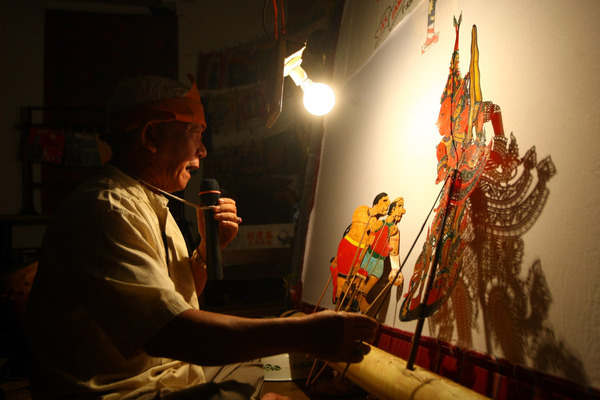

Xi'an, the ancient capital of China, is home to the Terracotta Army and was the starting point of the Silk Road.
The Terracotta Warriors and Horses of the First Qin Emperor is one of the most important archaeological discoveries in China and is located in the Lintong District of Xi'an City, Shaanxi Province. The Terracotta Warriors were accidentally discovered by a farmer in 1974 and are known as the “Eighth Wonder of the World”. It is part of the mausoleum of Qin Shi Huang, and consists of thousands of life-size terracotta warriors, including soldiers, horses and chariots, etc. Each terracotta warrior has a unique expression and posture, demonstrating the high level of ancient military and sculpture art. The Terracotta Army was built to protect the peace of Qin Shi Huang's underground world and is now a World Heritage Site and a must-visit historical attraction for tourists.
Try the famous Roujiamo (Chinese burger) and Biang Biang noodles, rich in flavor and history.
From the Giant Wild Goose Pagoda to the Muslim Quarter, Xi'an offers a blend of history and modern vibrance.
Located in Xi'an, Shaanxi Province, China, the Big Wild Goose Pagoda is a famous Buddhist building, built in the third year of Yonghui (652) of the Tang Dynasty. It was built under the auspices of the monk Xuanzang to house the Buddhist scriptures and statues he brought back from India. The Big Wild Goose Pagoda has seven floors and is about 64 meters high, with the appearance of a square tower and a solid structure, full of Tang Dynasty architectural style. The square around the pagoda is an important cultural attraction in Xi'an, especially during the night light show. As an important symbol of the Silk Road, the Big Wild Goose Pagoda is not only a historical site but also one of the landmarks of Xi'an.
As a famous historical and cultural city in China, Xi'an has a rich cultural heritage, such as shadow puppetry, calligraphy art, and Tang Dynasty music and dance.
Shadow puppetry is a traditional Chinese folk art that originated in the Western Han Dynasty and flourished in the Tang and Song dynasties, and is very popular for its unique form of performance. Artists manipulate beautifully carved leather puppets and present dramatic stories on a curtain under the projection of light. Shadow figures are made of cow or sheepskin, dyed and carved to make them vividly lifelike. The performance combines music, singing and dialogues, and is based on historical stories, myths and legends. Xi'an, as one of the important birthplaces of shadow theater, still retains a rich shadow culture and has a shadow theater hall where visitors can watch performances and experience production. It is not only a traditional form of entertainment, but also one of the representatives of China's intangible cultural heritage, carrying a deep historical and cultural heritage.
Today, Xi'an is not only an ancient historical capital, but also a bustling city that blends modern technology, commerce and culture.
The Grand Tang Dynasty Ever Bright City is a vibrant pedestrian street in Xi’an, China, celebrating the glory of the Tang Dynasty (618–907 AD). Stretching 2,100 meters, it features majestic sculptures, immersive performances, and dazzling light shows. At night, the area comes alive with 3D projections, drone shows, and traditional music and dance, offering a spectacular cultural experience. Visitors can explore local street food, tea houses, and souvenir shops while admiring the Giant Wild Goose Pagoda, a UNESCO World Heritage site. Combining history, entertainment, and modern technology, it is one of Xi’an’s top attractions, perfect for experiencing China’s rich cultural heritage in a stunning, illuminated setting.